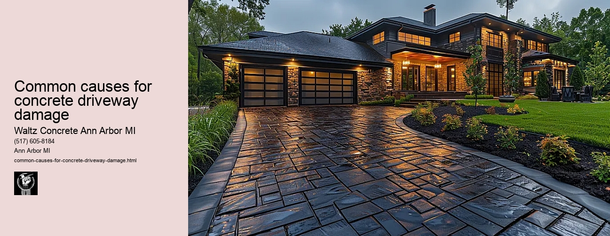

News
Concrete Driveway Installation Ann Arbor Mi
Concrete Driveway Installation Ann Arbor Mi
Choosing the right contractor for installation
Cost of concrete driveway installation in Ann Arbor
Permit requirements for driveway installation in Ann Arbor
The process and timeline of concrete driveway installation
Different types of concrete used in driveways
Maintenance and Repair of Concrete Driveways in Ann Arbor Mi
Maintenance and Repair of Concrete Driveways in Ann Arbor Mi
Preventive maintenance tips for durability
Common causes for concrete driveway damage
Professional companies offering repair services in Ann Arbor
Doityourself versus professional repairs
Costs associated with repairing a concrete driveway
Designs and Styles of Concrete Driveways in Ann Arbor Mi
Designs and Styles of Concrete Driveways in Ann Arbor Mi
Popular design trends for driveways
Considering climate factors when choosing a design or style
Unique customizations available for concrete driveways
Influence of home architecture on driveway design
Stamped stained and decorative options
Environmental Impact of Concrete Driveways in Ann Arbor Mi
Environmental Impact of Concrete Driveways in Ann Arbor Mi
Carbon footprint associated with concrete production
Use of sustainable materials in concrete driveways
Drainage considerations to reduce environmental impact
Local regulations regarding environmentally friendly driveways
Potential use of permeable or porous pavement
Alternatives to Concrete Driveways in Ann Arbor Mi
Alternatives to Concrete Driveways in Ann Arbor Mi
Asphalt driveways and their proscons
Paver stone driveways and their benefitsdrawbacks
Gravel or crushed stone as an alternative option
Comparing costs between different driveway materials
Resinbound surfaces as emerging technology
About Us
Contact Us

Common causes for concrete driveway damage
Common causes for concrete driveway damage
Title: Common Causes for Concrete Driveway Damage
Concrete driveways are well-regarded for their durability and resilience. However, despite their robust nature, they are not entirely immune to damage. Various elements contribute to the depreciation of a concrete driveway, leading to cracks, potholes, discoloration, and various other forms of damage. This essay will shed light on some of the common causes for concrete driveway damage that homeowners often grapple with.
Arguably one of the most prevalent culprits behind concrete driveway damage is weather exposure. Specifically in regions that experience extreme weather conditions such as heavy rains, intense heat or extreme cold. Over time, these harsh climatic conditions can cause expansion and contraction in the concrete which may lead to cracking or crumbling.
Water is another significant contributor to concrete driveway damage. When water seeps into tiny crevices and pores within the concrete surface and freezes during colder monthsit expandscausing cracks or heaving in your driveway. Poor drainage systems only exacerbate this issue as standing water accelerates deterioration.
The usage pattern also plays an integral role in determining the longevity of a concrete driveway. Heavy vehicles exert enormous pressure on driveways which may exceed their weight-bearing capacity leading to structural compromise over time. The frequency at which these heavy loads traverse across your driveway can expedite wear-and-tear, causing cracks or depressions.
Another factor contributing towards the degradation of a concrete driveway is inadequate construction standards employed during installation. If shortcuts were taken during initial construction such as improper sub-base preparation or using low-quality materials it leads to compromised integrity right off-the-bat and paves way for quicker than normal onset of structural issues.
Tree roots pose an overlooked yet potent threat too; growing tree roots can push up from underneath causing upheaval and eventual cracking in your beautiful concrete pathway if left unchecked for prolonged periods.
Chemical exposure consistently ranks high amongst reasons responsible for damaging driveways - specifically, the use of de-icing salts during winter. These chemicals seep into the concrete and corrode the steel reinforcements within, causing cracks and spalling in the long run.
Lastly, normal wear-and-tear over time can cause a concrete driveway to deteriorate. Even with optimal installation practices and regular maintenance, concrete driveways are not impervious to damage. They age as does everything else.
In conclusion, while concrete driveways are known for their durability, they can fall prey to various damaging factors such as extreme weather conditions, water infiltration, heavy usage patterns, poor construction standards, tree roots invasion, chemical exposure and inevitable wear-and-tear. Awareness about these common causes allows homeowners to take preventive measures ensuring longevity of their driveways or at least timely interventions when signs of damage begin to surface thereby saving significant costs linked with extensive repairs or replacements down-the-line.
Preventive maintenance tips for durability
Common causes for concrete driveway damage
Frequently Asked Questions
What are the most common causes of concrete driveway damage in Ann Arbor, MI?
The common causes include freeze-thaw cycles, heavy loads or traffic, tree root growth, ground movement due to soil erosion or poor compaction prior to installation, and chemical exposure.
How does the freeze-thaw cycle specifically affect concrete driveways?
In places like Ann Arbor where temperatures fluctuate below and above freezing point, water can seep into the pores of the concrete. When this water freezes, it expands causing cracks. Thawing then contracts these spaces again creating a cycle that weakens and eventually damages the concrete.
How do heavy loads contribute to driveway damage?
Concrete is strong but has a certain load limit. Regularly parking heavy vehicles or placing large amounts of weight on your driveway can lead to cracking and sinking over time as the pressure exceeds what the slab can handle.
What impact do tree roots have on concrete driveways?
Tree roots under your driveway can grow over time causing significant upheaval and cracking of slabs from below. This is why its important to take note of any trees near your driveway before installing it.
How does chemical exposure result in concrete driveway damage?
Chemicals from de-icing salts, fertilizers, motor oil leaks or even acidic rainwater can penetrate porous concrete leading to corrosion of internal reinforcing steel bars (if present) and degradation of the cement matrix itself which will weaken its structural integrity.
Common causes for concrete driveway damage